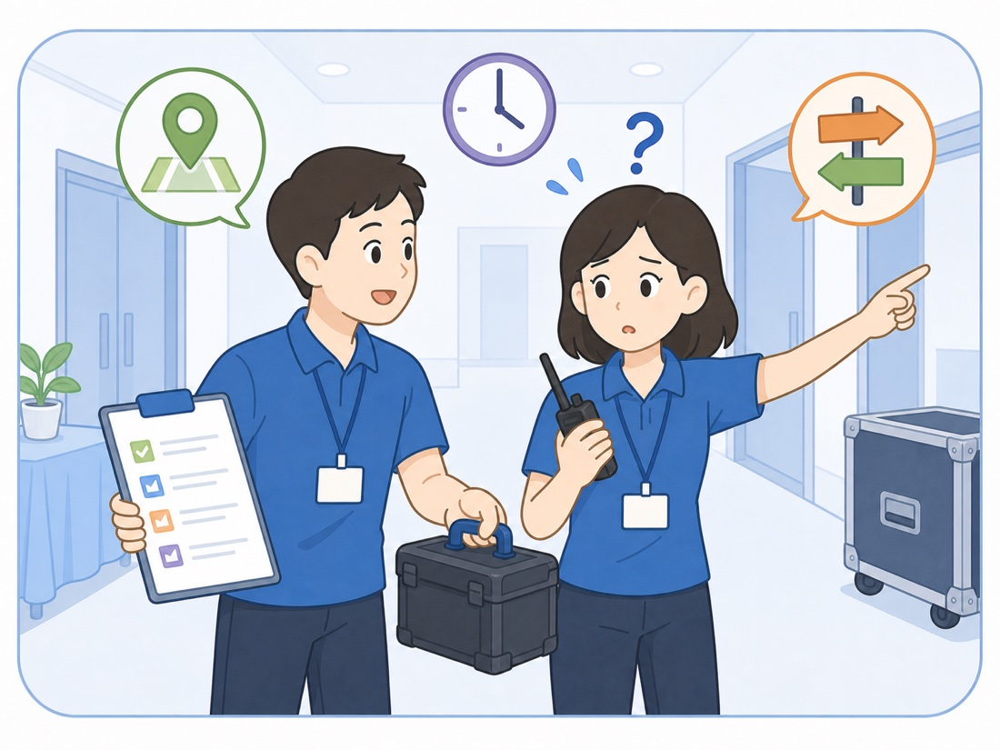
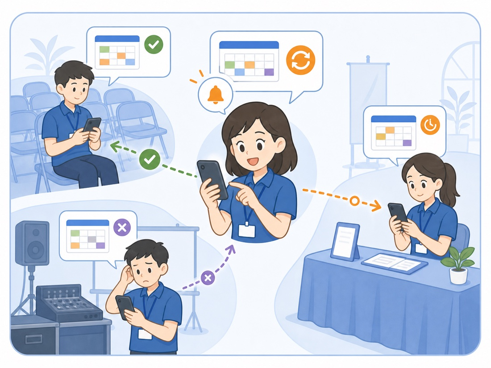
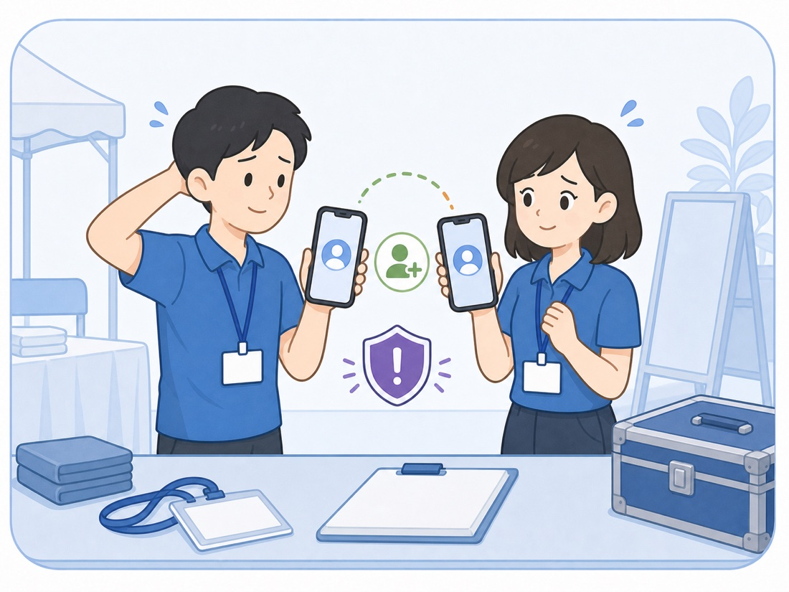
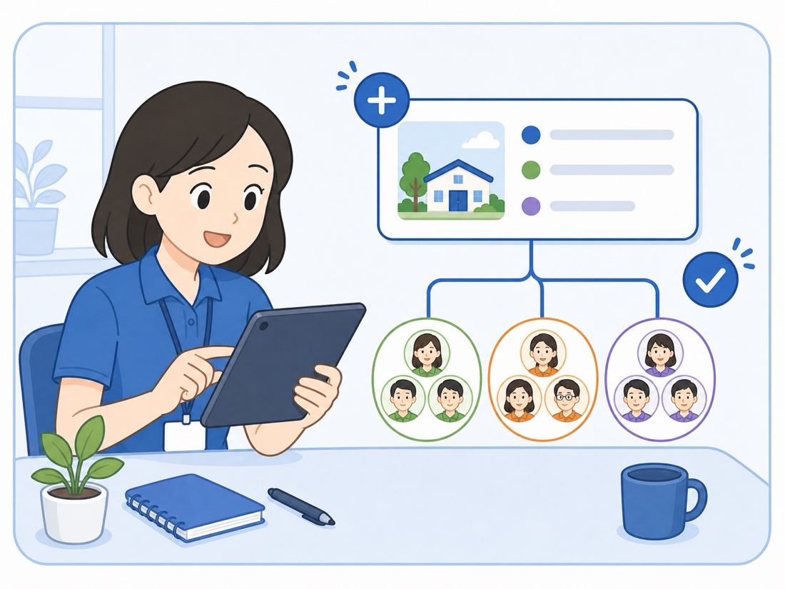
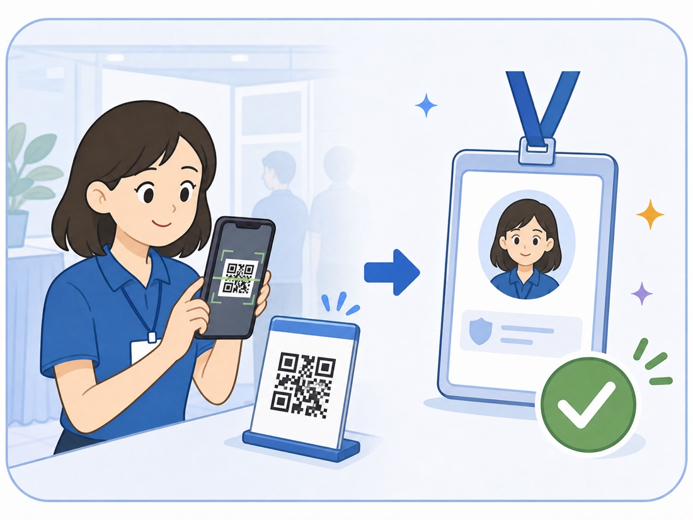
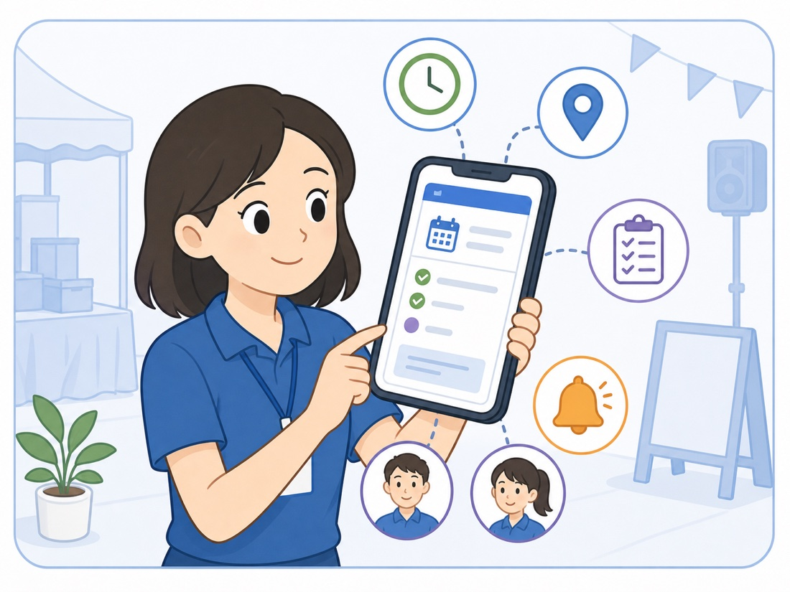
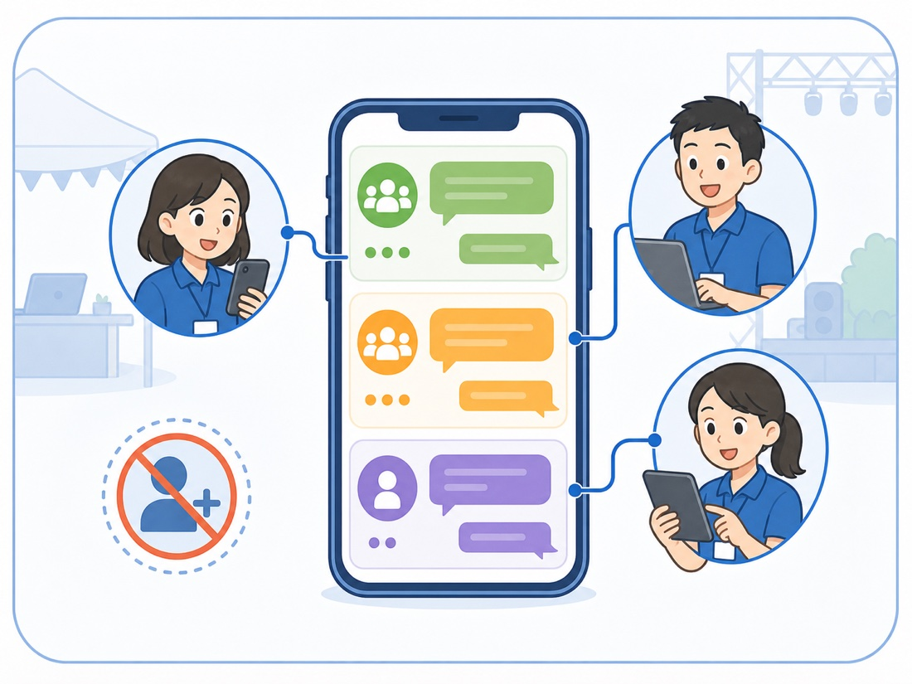

↓
下一項任務🔔
SHORT-TERM EVENT OPERATIONS
為研討會與小型活動設計的任務分派工具。匯入班表、完成分組與任務發布，工作人員掃描 QR Code 就能查看任務、接收提醒並進行活動內聯繫。
服務台準備接待組 · 3 人
已確認場地與設備確認場務組 · 4 人
已確認講師接待與引導議程組 · 2 人
待確認下一項任務🔔
提醒已設定預計於 07:28 通知
WHY IT MATTERS
二十到一百人的活動，通常沒有大型活動的系統預算，卻同樣需要處理人員、時間、地點與臨時異動。
Excel、紙本與群組訊息各有一份，活動前一天仍在確認哪個版本才是最新資料。

工作人員知道職務，卻不知道時間、地點、合作對象與完成後要交接給誰。

臨時換班或調整任務，只能逐一私訊，仍無法確認每個人是否已經看到。

只合作一天，卻得互加私人 LINE。活動結束後，聯絡關係與個資仍持續留下。
HOW IT WORKS
活動總召先建立活動，工作人員再透過手機領取身分、確認任務並共享現場情報。

註冊成為活動總召，建立活動並完成組別設定。

工作人員掃描 QR Code，完成驗證後領取活動人員身份。

從個人任務卡片查看時間、地點、工作內容與合作人員。

使用內建聊天室聯繫全體、小組或指定人員，不必另外註冊或互加好友。
TEMPORARY BY DESIGN
工作人員使用既有名單與 Email 驗證領取身分，不需要另外建立一個長期帳號。
不必建立永久帳號活動結束後不留下多餘登入關係
名單比對與 Email 驗證確認身分後才會啟用人員額度
不公開私人聯絡資料手機、Email 與 LINE 不顯示給其他成員
活動資料有明確生命週期活動結束後轉為唯讀並依規則刪除
FAQ
不用。活動任務站是手機網頁，工作人員掃描 QR Code 就能進入；也可以加入 iPhone 或 Android 主畫面。
可以。系統提供 CSV 格式範本，將現有排班資料整理成對應欄位後即可匯入。
不需要建立永久帳號。工作人員以活動 QR Code 進入，完成名單比對與 Email 驗證後即可領取身分。
MVP 以中小型短期活動為主，一場活動最多支援 100 位已啟用的工作人員。
活動資料會先轉為唯讀並撤銷工作人員存取，個人資料與訊息則依服務規則於期限後刪除。
READY FOR YOUR NEXT EVENT
建立活動後，即可匯入人員與任務班表。